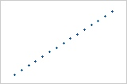
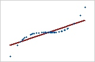
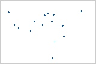
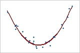

Comparison of Pearson and Spearman coefficients
Pearson coefficients
Pearson correlation cofficient是两个变量之间的协方差（covariance）除以两者标准差的乘积，它假定变量的分布是正态分布
Spearman coefficients
Spearman correlation cofficient则是使用X、Y的秩进行计算求的秩的标准差与协方差，但是Spearman相关系数不要求变量的分布满足正态分布假设，因此在数据不满足正态分布的情况下也可以使用，可以更好地反映非线性关系和异常值。
也可用如下公式进行计算
其中，为样本个数
Comparsion of Pearson and Spearman coefficients
| Pearson 积矩相关 | Spearman 秩次相关 |
|---|---|
| Pearson 相关评估两个连续变量之间的线性关系。当一个变量中的变化与另一个变量中的成比例变化相关时，这两个变量具有线性关系 | Spearman 相关评估两个连续或顺序变量之间的单调关系。在单调关系中，变量倾向于同时变化，但不一定以恒定的速率变化。Spearman 相关系数基于每个变量的秩值（而非原始数据） |
| $-1\le\rho\le1 $ | $-1\le\rho\le1 $ |

Pearson = +1，Spearman = +1
pg)
Pearson = +0.851，Spearman = +1

Pearson = −0.093，Spearman = −0.093

Pearson = 0，Spearman = 0
Pearson 相关系数只度量线性关系。Spearman 相关系数只度量单调关系。因此，即使相关系数为 0，也可能存在有意义的关系。检查散点图可确定关系的形式。